5' 11" · A calm country singer of 40 with an unhurried, self-possessed stage presence. Forty, lean and rangy, relaxed and hip-loaded with grounded staggered boots. Slim and long-limbed: narrow through the hips, waist and thighs, with a slight wiry frame carrying no bulk; lean rather than sturdy, and clearly the leaner half of the roster beside Belter and Heavyweight. Never a catwalk fashion pose or an exaggerated cowboy caricature. Her recognition cues are a broad western hat whose brim sweeps up at both sides into a shallow taco curve while staying level front-to-back, long hair falling in hard bands beneath it, a western shoulder yoke, a loaded hip, and staggered boots, all readable without facial detail. She wears a turquoise western shirt with a clear shoulder yoke, dark trousers, a broad belt with a simple metal buckle, sturdy brown boots, and a dark chocolate-brown matte-felt western hat. The hat is a cattleman: a tall crown tapering toward the top, one long crease down the centre and a pinch on each side of the front; a wide brim, flat and level front and back, rolled up at both sides into a shallow even taco curve; a raw-cut unbound brim edge; and a thin scuffed leather band in a warmer red-brown circling the base of the crown, knotted at one side with both ends left hanging onto the brim. The felt is matte with a velvety nap, never slick or shiny. She holds one wireless handheld microphone loosely at hip height in her character-right hand; no cable, stand, firearm, lasso or weapon-like accessory. Her ready stance has weight settled into the rear hip, knees flexed, boots staggered, the free hand near the belt, and the character-right hand holding the microphone naturally at hip height. Palette, as base/shadow/highlight per material: dark #20232B / #101217 / #3A3E48; white #F1EEE5 / #BDB9AE / #FFFFFF; metal #6F747C / #34383E / #B5BAC0; turquoise #35C8B0 / #197867 / #70E4CF; brown #6C4329 / #352014 / #9B6945; skin #B97251 / #70422E / #DA9773; hair #59402D / #2A1E16 / #856548; hat felt #4C3B33 / #241A17 / #7A6355; hat band #8A533A / #4A2A1C / #B87B57. Never draw: a hat tilted off the head's axis, or a brim that dips or lifts front-to-back; a flat pancake brim with no side roll; a tan, camel or light-brown hat; a bound or ribbon-edged brim; a fabric or ribbon hat band; glossy or satin-finish felt; cowboy caricature; sheriff badge; firearm or lasso; fringe overload; brand marks; aggressive draw stance; a face older or younger than forty — no deep-set lines around the eyes or mouth, no sagging or hollowed cheeks, no grey or silvered hair, and equally no youth-coded or twenty-something face; a heavy, thick or bulky build; wide flaring hips; thick or muscular thighs; an hourglass or pin-up silhouette; microphone cable, stand, or duplicate microphone; firearm, lasso, or weapon-like accessory.
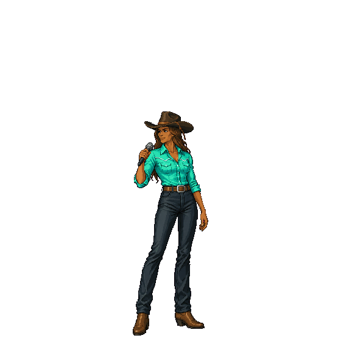
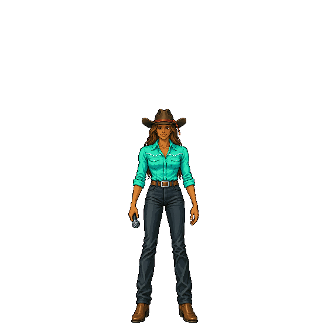
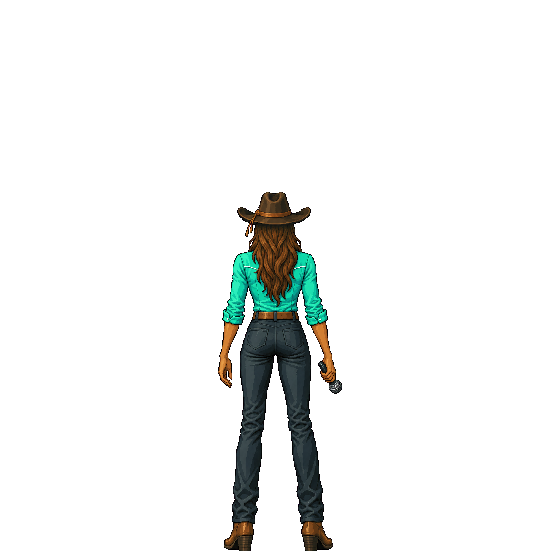
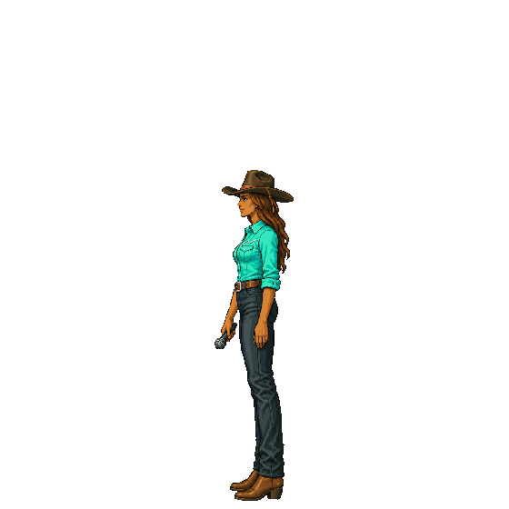
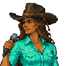
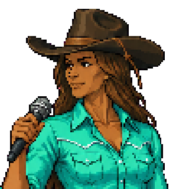
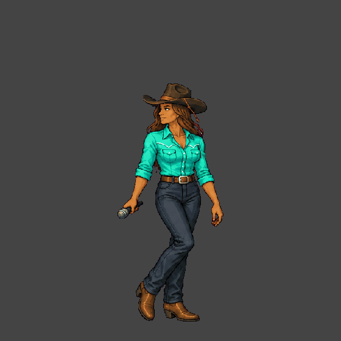
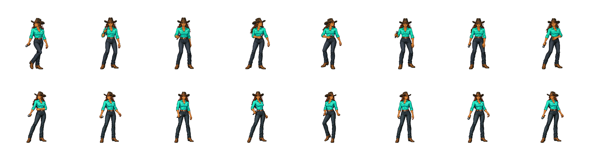
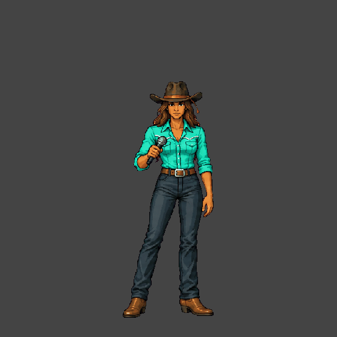
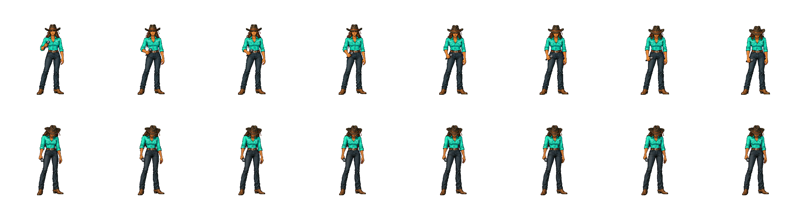
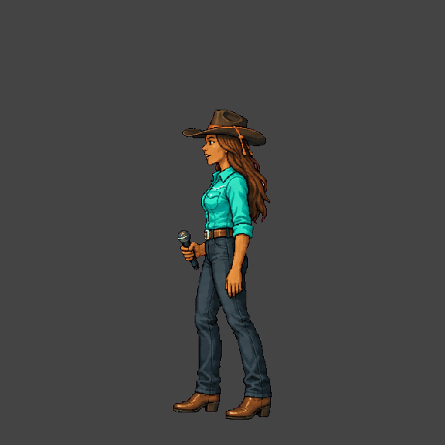
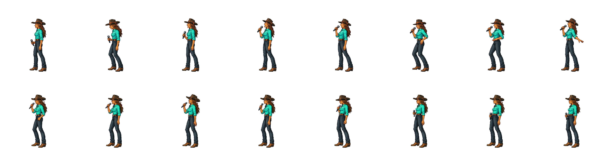
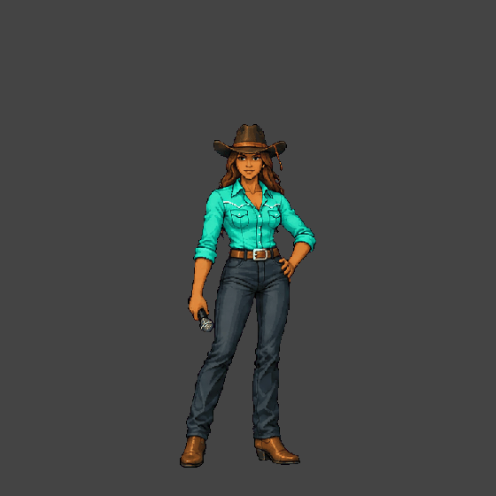
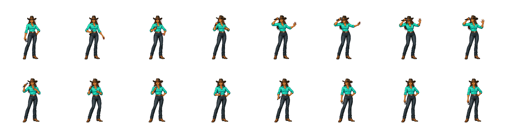